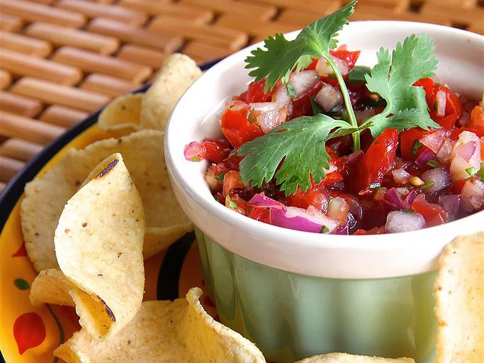
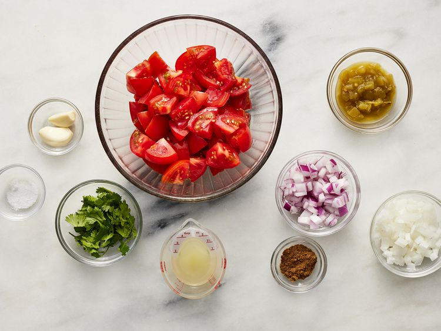
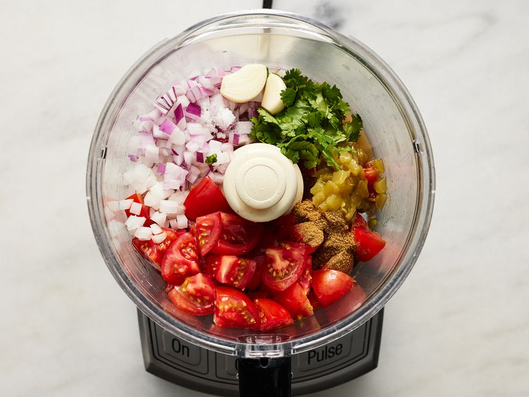
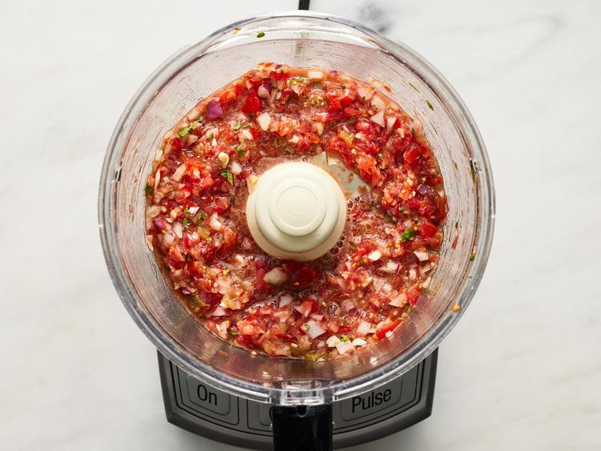
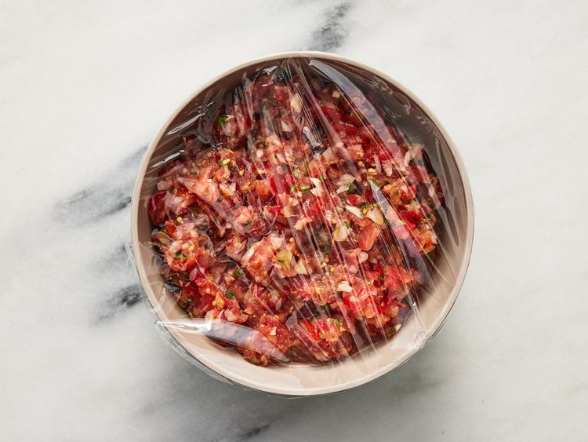

This salsa recipe is made with canned green chilies instead of jalapeños. It tastes great, so I'm sticking with it!
Gather all ingredients.

Combine tomatoes, red onion, yellow onion, green chilies, lime juice, cilantro, garlic, cumin, and salt in a food processor.

Pulse until mixture is combined but still chunky.

Transfer salsa to a bowl, cover with plastic wrap, and refrigerate at least 1 hour before serving.

Serve with chips.